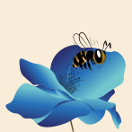

 Étape 3 L'abeille va se poser sur la fleur, c'est à ce moment là que le polle va venir s'aggriper aux poils de l'abeille.s »
Étape 4 Le pollen est ensuite transporté des plantes mâles vers les plantes femelles par l'insecte lorsqu'il vole. »